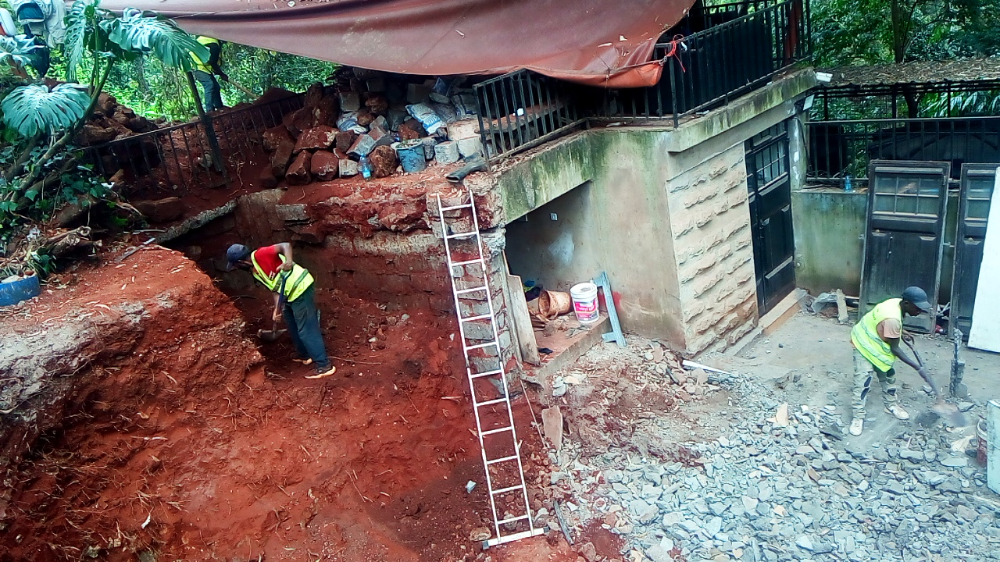
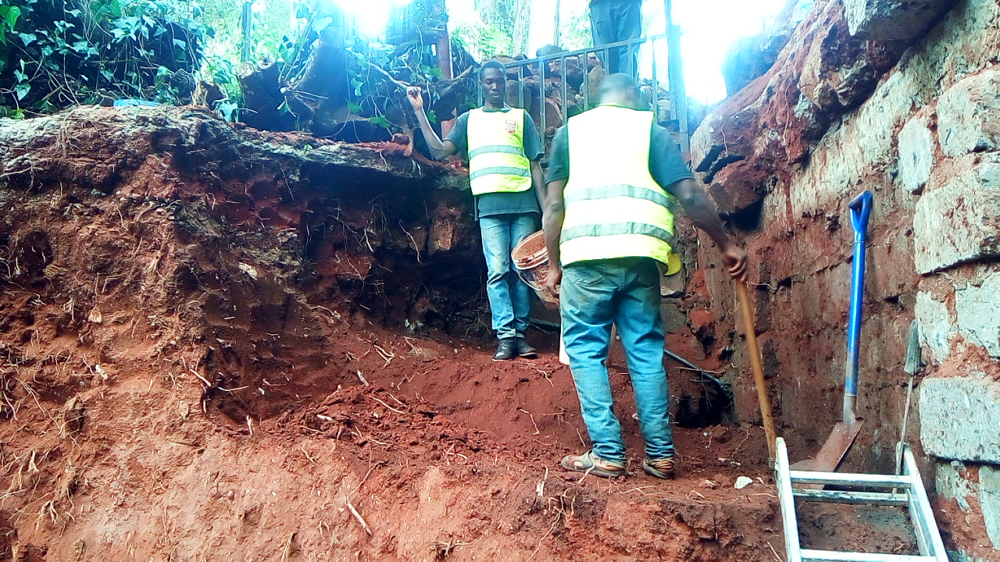
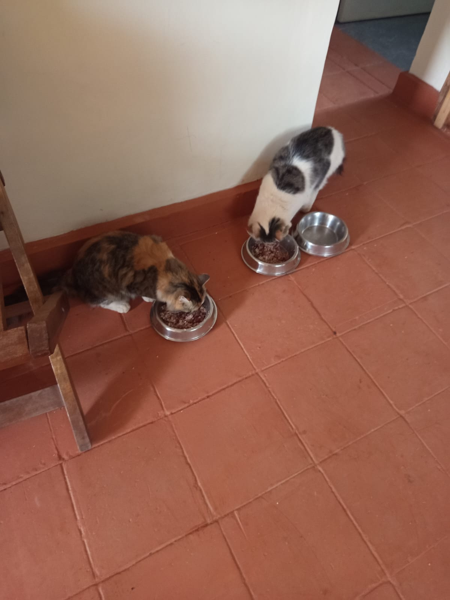

Mucheru World of Golf
Field development operations at Mucheru World of Golf, overseen by Mr. Gichuhi, advanced across perimeter landscaping, civil entry architectural finishing, subsurface green drainage installation, hardcore sub-base preparation, and equipment fleet transition:
- Perimeter Hedge Trench Excavation (Githinji's Team): Githinji's workforce dug and graded a continuous linear trench along the estate boundary fence line. The excavated trench prepares planting beds for boundary hedges, running parallel to both treated black timber posts and white-painted perimeter markers along the main access road.
- Main Entrance Gate Painting Completed (100% Milestone): Painting of the main entrance dual steel swing gates to the golf course was successfully completed. The steel tubular gates were coated in crisp gloss white enamel, while the supporting structural pillars were finished in contrasting deep black, creating a distinguished, high-visibility entrance portal.
- Covering Drainage Pipes Across All Greens (In Progress): Ground crews advanced the systematic bedding and covering of perforated PVC drainage lines across all greens. Flexible pipes laid within excavated trenches were encapsulated with geotextile filter wrap and backfilled with crushed stone to protect conduit integrity and secure optimal percolation.
- Manual Breaking & Sizing of Hardcore Rocks (In Progress): Heavy manual breaking of large hardcore rocks proceeded inside the golf green foundation basins. Laborers armed with sledgehammers and crowbars fractured oversized boulders down to uniform sub-base aggregates, hand-packing them into a dense, interlocked hardcore foundation layer over the protective geotextile underlay.
- Heavy Machinery Transition & Fleet Logistics: Following the mechanical breakdown experienced on site, the JCB Backhoe Loader has been safely demobilized and taken away from the site for comprehensive workshop repairs. The XGMA Backhoe Tractor is scheduled to return to the site to resume and finalize all outstanding earthmoving and shaping operations.
Key Accomplishments — Mucheru World of Golf
Successfully completed 100% of painting works on the golf course main entrance gates, excavated perimeter hedge planting trenches along boundary fence lines under Githinji's team, advanced drainage pipe covering across all greens, fractured and hand-packed hardcore rock foundation bedding, published daily video documentation to YouTube, and organized demobilization of the disabled JCB backhoe pending arrival of the replacement XGMA tractor.
Operational equipment status for earthmoving machinery deployed at Mucheru World of Golf. In accordance with domain guidelines, operational hours and billing are tracked under consolidated machine accounting:
| Equipment Description | Operational Status & Disposition | Shift Hours | Billing Rate | Day Total (KES) |
|---|---|---|---|---|
| Backhoe Loader (JCB 3DX) Reg: KBP 204A • Heavy Earthmover |
Demobilized and transported off-site following mechanical breakdown for comprehensive mechanical servicing and hydraulic restoration. | 0.0 hrs (Off-Site) |
KES 6,500 / hr | KES 0 |
| Backhoe Loader (XGMA Tractor) Replacement Earthmoving Fleet |
Scheduled for site remobilization to assume heavy earthmoving, teebox finishing, and remaining contouring works. | Mobilization (In Transit) |
KES 6,500 / hr | KES 0 |
| Consolidated Machinery Billing Total (September 8, 2026) | 0.0 hrs | — | KES 0 | |
Equipment Transition & Earthworks Resumption
No operational hours were billed on site today as the disabled JCB backhoe was evacuated from the property for mechanical overhaul. Ground preparation continued using manual labor crews pending the arrival of the XGMA backhoe tractor to complete remaining heavy earthworks.
Field video documentation capturing comprehensive daily progress on YouTube, manual fracturing of hardcore foundation rock aggregates, and continuous drainage pipe bedding across green foundations:
🎥 Mucheru World of Golf — Daily Operations & Course Progress
Comprehensive field progress video documenting September 8 operations at Mucheru World of Golf, showing boundary hedge trenching, painted main gates, drainage pipe covering, and rock breaking.
🎥 Golf Green Sub-Base — Breaking Hardcore Rocks
Operational field footage documenting labor personnel manually breaking large hardcore rock boulders with sledgehammers inside the lined green foundation basin.
🎥 Green Drainage Network — Covering Subsurface Pipes
Field video recording showing ground crews carefully covering and bedding perforated drainage pipe lines within the golf green foundation grid.
Comprehensive photographic records documenting completed entrance gate painting, boundary hedge trench excavation, green drainage pipe covering, and manual hardcore rock sizing:

Main Entrance Gate Painting Completed
Completed dual steel main entrance gates painted in crisp gloss white, mounted on contrasting black pillars along the golf course access road.

Perimeter Hedge Trench Excavation (Githinji's Team)
Githinji's team digging a continuous linear trench along white-painted boundary posts and wire fence line in preparation for planting perimeter hedges.

Boundary Fence Line — Trenching for Hedges
Field personnel actively excavating and grading the planting trench along treated black wooden fence posts and wire netting beside the access corridor.

Green Subsurface Infrastructure — Covering Drainage Pipes
Ground workforce packing stone foundation and covering drainage conduits across the green subgrade lined with protective geotextile membrane.

Green Foundation Layer — Breaking Hardcore Rocks
Laborers utilizing heavy sledgehammers and crowbars to fracture and interlock hardcore rocks into a dense, stable foundation bed within the green basin.
Chaka Farms
Multi-faceted agricultural, livestock health, civil realignment, and estate management operations advanced at Chaka Farms across coordinated operational divisions:
- Mechanized Silage Maize Land Preparation (Kinoti): Overseen by Kinoti, mechanized tillage advanced rapidly across dedicated agricultural acreage using a tractor fitted with a high-speed rotavator. The rotary blades pulverized soil clods and crop residue into an ultra-fine, aerated tilth, creating optimal seedbed conditions for upcoming silage maize sowing to secure nutrient-rich livestock feed.
- Field Crew Planting Alignment (Margaret & Monica): Margaret and Monica assisted the farm team directly in the fields, establishing straight planting guide strings and utilizing hand shovels to grade furrows and remove surface stones in unison with tractor rotavation passes.
- Dairy Milk Yield Accounting (Kamandau): Overseen by Kamandau, dairy cow milking yielded a total gross production of 6.0 Litres, recorded strictly in Litres (4.0 Litres during morning milking and 2.0 Litres during evening milking).
- Strict Milk Disbursements & Net Farm Balance: Authorized deductions totaling 1.5 Litres were disbursed out of the gross yield: 1.0 Litre allocated to goat kids (0.5L morning + 0.5L evening) and 0.5 Litres allocated to staff member Kamau. Following deductions, the exact net remaining farm balance was 4.5 Litres.
- Morning Cattle Spraying (Kamandau): Systematic cattle spraying was conducted in the morning across the herd. Utilizing a knapsack sprayer along the wooden paddock crush, cattle were thoroughly treated with acaricide solution to control ticks, biting flies, and external parasites.
- Pregnant Ewe Medical Status & Miscarriage: Regarding the sick sheep treated yesterday, the ewe was confirmed to be pregnant and unfortunately suffered a miscarriage today. The ewe is being monitored on the farm.
- Perimeter Gate Entrance Relocation (Mr. Gichuhi): Preparatory groundworks commenced under Mr. Gichuhi's oversight to relocate the farm entrance gate to the interior of the boundary fence line. Personnel excavated and leveled gravel along the driveway kerbing to accommodate the repositioned gate posts and security fencing.
- Canine Unit Care, Training & Routine (Willy): Willy conducted structured canine obedience routines, including "Paw" command conditioning, kennel manners reinforcement, thorough kennel enclosure cleaning and washing, and afternoon off-leash exercise across open farm paddocks. Scheduled canine socialization drills were deferred today due to cold weather.
- Compound Hygiene & Maintenance: Margaret and Monica maintained general compound sweeping, pathway sanitation, and perimeter tidiness across farm outbuildings before joining the field crews.
Chaka Farms Operational Highlights
Silage maize acreage rotavated into premium seedbed tilth with farm team assistance; dairy yield strictly reconciled at 6.0L gross and 4.5L net balance; cattle sprayed against ticks in the morning; entrance gate relocation groundworks underway under Mr. Gichuhi; and canine unit trained, kennels sanitized, and dogs exercised off-leash under Willy.
Quantitative daily milk production log recorded strictly in Litres (L). Allocations to goat kids and staff represent disbursements drawn out of total gross yield:
| Item / Description | Morning (L) | Evening (L) | Total (L) | Deduction (L) | Farm Balance (L) |
|---|---|---|---|---|---|
| Cow Milking Yield (Gross Production) | 4.0 L | 2.0 L | 6.0 L | — | 6.0 L |
| Goat Kids Ration | 0.5 L | 0.5 L | 1.0 L | - 1.0 L | — |
| Staff Allocation — Kamau | — | — | 0.5 L | - 0.5 L | — |
| Net Farm Milk Balance | 4.0 L Morning | 2.0 L Evening | 6.0 L Gross | - 1.5 L Total Deductions | 4.5 L Net |
Production & Allocation Reconciliation
Total gross milk production stood firmly at 6.0 Litres (4.0L morning + 2.0L evening). Following authorized disbursements of 1.0 Litre to goat kids (0.5L morning + 0.5L evening) and 0.5 Litres to Kamau, total deductions equaled 1.5 Litres, preserving an exact net remaining farm balance of 4.5 Litres.
Daily livestock welfare, parasite prevention protocols, and veterinary medical records logged across the dairy cattle herd and sheep flock:
- Morning Cattle Spraying & Tick Control: The entire cattle herd was funneled through the wooden race and holding crush during the morning hours. Kamandau administered full-body knapsack spraying with approved veterinary acaricide to safeguard against tick-borne illnesses (East Coast Fever, Anaplasmosis) and seasonal flies.
- Pregnant Ewe Medical Status & Miscarriage: The sick sheep that received veterinary medication and clinical treatment yesterday was confirmed to be pregnant. Unfortunately, the animal experienced a miscarriage today. Farm personnel are keeping the ewe under observation following the miscarriage.
Livestock Health Notice — Ewe Miscarriage
The sick sheep treated yesterday was confirmed pregnant and suffered a miscarriage today. No additional medications or antibiotics were administered, and the ewe was not isolated; she remains on the farm under observation by personnel.
Disciplined working canine training, facility hygiene, exercise regimens, and compound maintenance were executed systematically under dedicated supervisory oversight:
- Paw Command Conditioning: Willy conducted individual training drills focusing on the "Paw" cue to reinforce handler engagement, tactile desensitization, and responsive compliance.
- Kennel Manners & Impulse Control: Structured threshold manners drills were practiced at kennel doors, requiring dogs to sit calmly before gate release to maintain safe, disciplined kennel routines.
- Kennel Cleaning & Facility Sanitation: Complete washing, sweeping, and chemical disinfection of all kennel floors, sleeping cubicles, and outdoor runs was conducted, keeping the canine housing clean and pest-free.
- Afternoon Off-Leash Exercise: The working dogs were granted an invigorating off-leash exercise and conditioning run across the open farm fields in the afternoon, promoting cardiovascular health and physical stimulation.
- Socialization Protocol Notice: Scheduled canine socialization drills were deferred today due to cold weather across the farm.
- Compound Hygiene & Silage Field Assistance: Margaret and Monica carried out routine sweeping and sanitation across the central farm compound, outbuilding verandas, and access pathways before actively assisting the silage maize planting team in the fields.
Canine Training & Facility Cleanliness Summary
Working dogs conditioned in obedience and kennel manners, kennels disinfected, afternoon off-leash exercise completed, and farm compound maintained in pristine order.
Photographic documentation capturing livestock spraying, entrance gate realignment preparation, mechanized tractor rotavation, and field crew seedbed grading:

Morning Cattle Spraying & Tick Control
Kamandau carrying a blue knapsack sprayer along the wooden paddock crush, administering acaricide spray to dairy cows to protect against external parasites.

Perimeter Gate Relocation Preparation
Mr. Gichuhi and farm personnel excavating ground along the stone-kerbed gravel driveway to prepare new footing alignments for repositioning the entrance gate inward.

Mechanized Tillage — Tractor Rotavator in Action
Aerial drone perspective capturing the tractor operating the high-speed orange rotavator attachment, pulverizing dry soil into a refined tilth for silage maize planting.

Silage Maize Prep — Field Alignment & Tillage
Drone overview showing 5 farm personnel in green overalls manually grading furrows along planting strings while the tractor rotavates adjacent acreage.

Rotavator Soil Pulverization & Aeration
Tractor churning compacted soil, creating an aerated crumb structure across the expansive silage plot framed by acacia trees and windbreaks.

Field Crew Planting Line Setup & Furrow Grading
Farm workers (including Margaret and Monica) using shovels and alignment string lines to manually grade furrows and remove stones across the tilled field.

Silage Field Bed Preparation — Finely Tilled Soil
Wide perspective of the cultivated agricultural plot displaying finely worked, level topsoil ready for silage maize sowing to secure livestock feed.

Chaka Farms Acreage — Rotavated Planting Bed
Panoramic view across the prepared agricultural field showing uniform rotavated seedbeds bordered by mature cypress trees under an overcast sky.
Kabete Residence
Extensive civil demolition, structural foundation excavation, storage tank soil bagging, landscape top-dressing, and domestic pet management advanced at Kabete Residence, with operations overseen and field updates shared by Njoki:
- Outdoor Fireplace Clearance & Masonry Sorting (In Progress): Demolition personnel in high-visibility safety vests continued clearing the sunken outdoor fireplace terrace. Heavy broken building stones, mortar fragments, and structural debris were cleared and stacked, while the lower terrace ground was graded down to firm subgrade.
- Clearance & Stacking of Demolished Toilet Stones: Building stones salvaged from the demolished toilet structure at the fireplace were cleared, sorted, and neatly stacked in organized rows along the garden boundary fence vegetation border for future masonry repurposing.
- Structural Foundation Trench Expansion (In Progress): Ground crews advanced deep excavation works to expand the structural foundation beneath the upper metal terrace railing. Workers cut into the dense red subsoil bank alongside the retaining wall to prepare stable footings for reinforced masonry construction.
- Demolition of Fireplace Floor Slab (In Progress): Demolition teams actively broke up the aged concrete floor slab at the fireplace terrace using heavy sledgehammers and pickaxes, breaking the slab into manageable fragments for clearing and disposal.
- Clearing Waste Materials from Fireplace Store: Personnel accessed the recessed storage undercroft room located at the lower terrace of the fireplace. Accumulated obsolete materials, discarded items, and construction debris were sorted, bagged, and cleared out to restore order.
- Clearance & Bagging of Soil at Main Storage Tank Ground: Laborers shoveled and bagged mounds of rich red subsoil excavated from the main water storage tank foundation located at the residential lawn. Sacks were filled and staged for transfer to garden landscaping zones.
- Top-Dressing Residential Flower Beds: Fresh, nutrient-rich red loam topsoil was distributed and top-dressed across residential flower beds. Workers spread the soil around ornamental syngoniums, mature tree trunks, flowering agapanthus, and mixed perennial borders to nourish root zones and improve garden aesthetics.
- Domestic Pet Care & Active Watch for Mocha: Resident pets received attentive daily care at the residence. Ajabu the Golden Retriever was taken for an outdoor leashed walk along the driveway and fed his evening meal from his dedicated bowl on the red-tiled veranda. Resident cats Reo and Aiko were fed their evening dinner indoors side-by-side.
Key Accomplishments — Kabete Residence
Fireplace terrace masonry cleared and building stones salvaged along fence; concrete floor slab demolished and foundation trench expanded; fireplace store cleared of waste debris; main water tank soil bagged; residential flower beds top-dressed with red loam; and pet care with Ajabu walking and dinner routine completed.
Daily feeding records, pet welfare logs, and factual residency tracking for household pets residing at Kabete Residence:
- Ajabu the Golden Retriever (Leashed Walking & Evening Dinner): Ajabu was taken out for an invigorating leashed walk along the driveway, walking calmly and attentively on leash with his handler. In the evening, he was provided with fresh water and fed his complete evening meal from his feeding bowl on the red-tiled veranda.
- Resident Cats Feeding (Reo & Aiko): Resident cats Reo and Aiko were fed their evening meals side-by-side indoors from stainless steel bowls.
Critical Factual Notice — Cat Mocha Missing Since Morning
Resident Cat Mocha has not been seen at the residence since morning. During the evening feeding routine, only Reo and Aiko were present at the food bowls (confirmed by photographic evidence showing two feeding cats and the third bowl vacant). No sightings have been confirmed, and household personnel are maintaining an active watch across the estate grounds and surrounding perimeters.
Photographic documentation capturing fireplace terrace demolition, rubble sorting, foundation expansion, store waste clearing, soil bagging, flower bed top-dressing, and domestic pet care including Ajabu's walk and evening feeding:

Fireplace Terrace — Concurrent Demolition & Excavation
High-angle perspective showing workers excavating the red soil embankment, breaking concrete floor slab, and clearing rubble beside the undercroft store portal.

Retaining Wall Footing — Embankment Excavation
Personnel cutting into the red soil bank beneath the masonry stone retaining wall to establish proper depth and profile for expanded structural works.

Fireplace Terrace — Masonry Rubble Clearance
Demolition personnel in reflective safety vests sorting, clearing, and leveling broken stone and concrete rubble across the sunken terrace floor.

Fireplace Concrete Floor Slab Demolition
Three workers breaking up the aged concrete floor slab at the fireplace terrace into manageable chunks for extraction and clearance.

Structural Foundation Expansion Excavation
Workers digging and deepening the foundation trench into firm red subsoil beneath the upper metal terrace railing to expand the structural footprint.

Fireplace Toilet Demolition — Salvaged Stone Stacking
Sound building stones salvaged from the demolished fireplace toilet stacked neatly in organized rows along the boundary fence foliage border for reuse.

Fireplace Undercroft Store — Waste Material Clearance
Worker in reflective safety vest sorting, bagging, and removing accumulated waste materials and debris from inside the recessed fireplace undercroft store room.

Main Water Storage Tank Ground — Soil Bagging
Ground crews shoveling excavated red soil from the main water storage tank foundation into heavy-duty sacks on the lawn for transfer to garden beds.

Residential Garden — Flower Bed Top Dressing
Fresh red loam soil spread across residential garden beds around green syngonium foliage to nourish root zones and enhance garden grading.

Garden Bed Nourishment Along Boundary Wall
Red topsoil top-dressing distributed around mature tree bases, flowering agapanthus, and decorative perennials along the masonry stone boundary wall.

Ajabu the Golden Retriever — Leashed Walk
Ajabu enjoying an outdoor walk on a leash along the driveway at Kabete Residence, displaying good spirits and calm manners on-leash.

Ajabu the Golden Retriever — Evening Dinner
Ajabu enjoying his evening meal from his dedicated feeding bowl on the red-tiled veranda floor at Kabete Residence.

Domestic Pet Feeding — Reo and Aiko Indoors
Resident cats Reo and Aiko eating their evening meals indoors from stainless steel bowls, with the vacant third bowl reflecting Mocha's absence since morning.
Amani Cottage
Comprehensive landscape maintenance, external window hygiene, and detailed two-story interior housekeeping were accomplished across Amani Cottage:
- Estate Grounds & Lawn Irrigation: Edwin performed extensive sprinkler and hose irrigation across established lawn turf, shrubbery borders, and ornamental flower beds, providing deep moisture replenishment to maintain rich green landscape vitality.
- Compound Sweeping & Litter Collection: Thorough compound sweeping was carried out along paved walkways, driveway borders, and stone patio surrounds. All fallen tree leaves, twigs, and windblown litter were gathered and cleanly disposed of.
- Downstairs Exterior Window Cleaning: Edwin washed and meticulously wiped all exterior ground-floor windows, eliminating dust accumulation, rain marks, and organic residue to restore pristine glass clarity.
- Comprehensive Two-Story House Cleaning: The Domestic Housekeeper executed a thorough top-to-bottom deep clean throughout the entire cottage interior, from the upstairs bedrooms and landing down through the ground-floor living, dining, and kitchen spaces.
- Upstairs Window Cleaning: All upstairs interior and exterior window panes, sills, and window frames were thoroughly washed and polished, leaving windows bright and spotless throughout the upper floor.
Amani Cottage Accomplishment Summary
Grounds fully irrigated, compound swept free of litter, ground-floor exterior windows cleaned by Edwin, and complete two-story house interior cleaning and upstairs window washing completed by the Domestic Housekeeper.